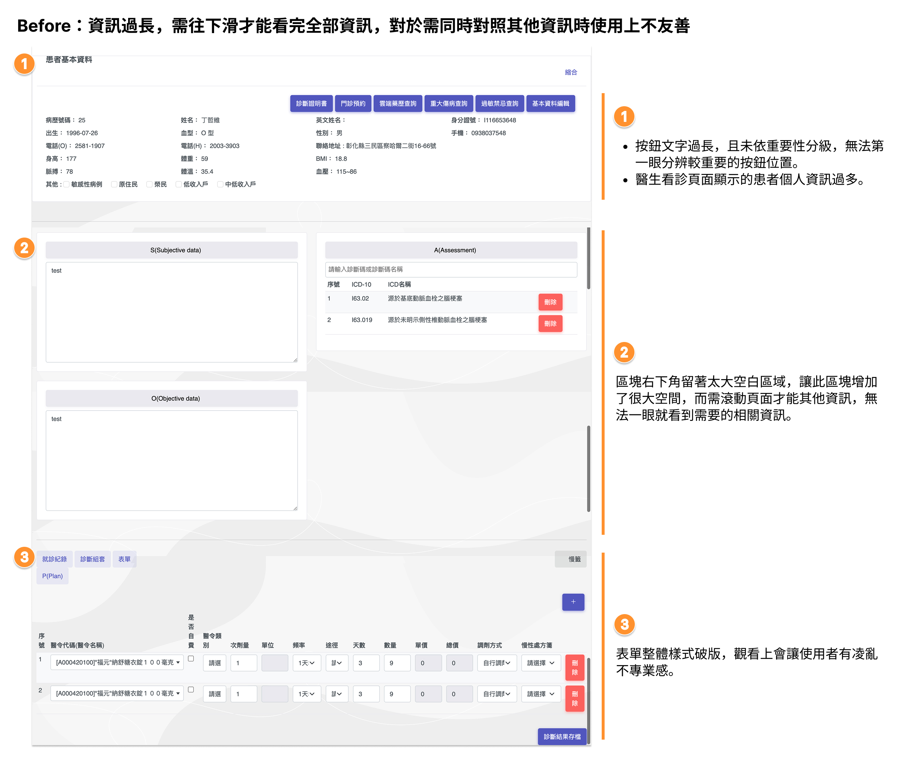
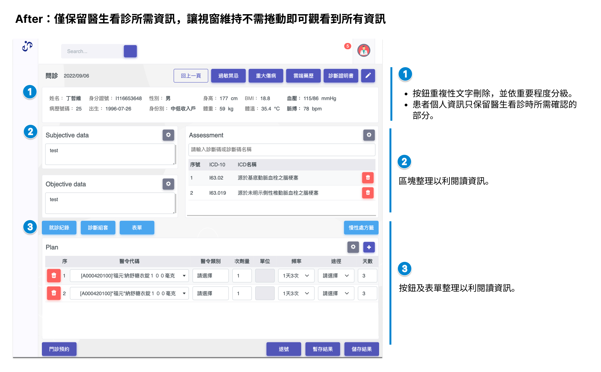

以使用者情境出發，重構醫師看診工作介面——精煉資訊層級、重組功能按鈕、優化版面佈局，讓醫師在高壓看診環境中無需捲動頁面即可掌握所有關鍵資訊，專注於病患本身。
eHIS（Electronic Health Information
System）是醫院端的電子病歷資訊系統，看診頁面是醫師在診間最頻繁使用的核心工作介面。
每位醫師每天可能面對數十位至上百位患者，介面的操作效率直接影響看診品質與醫師的工作壓力。
醫師在看診時往往需要同時處理多件事：口頭問診、輸入主觀/客觀資料、查詢過去病史、開立處方。
這是一個「高認知負荷 × 高時間壓力」的複合場景，任何多餘的資訊或操作步驟都會成為干擾，甚至提高醫療失誤的風險。
原始介面存在三個核心問題：
患者基本資料顯示欄位過多，七個功能按鈕文字冗長且重要性未分級，醫師無法一眼辨識關鍵資訊與主要操作。
S/O/A 區塊右下方存在大面積空白，版面未有效運用，使整體頁面高度過長，需要捲動才能檢視完整資訊。
處方（Plan）區塊的表格格式破版，欄位寬度不一、按鈕位置混亂，造成視覺凌亂感，降低使用者對系統的信賴感。
資訊過長，需往下滑才能看完全部資訊，對於需同時對照其他資訊時使用上不友善。

以「醫師看診當下真正需要什麼」為出發點，採用資訊精煉、層級重組、版面壓縮三個方向同步進行優化：
從「全部顯示」改為「看診確認所需」。保留姓名、身分證號、性別、身高、BMI、血壓、體重、體溫、脈搏等核心生理數值，移除在看診當下非必要的完整地址、電話等資訊，減少視覺雜訊。
將七個同等視覺權重的按鈕，依使用頻率與重要性重新分級：高頻核心功能（過敏禁忌、重大傷病、雲端藥歷、診斷證明）以 Primary 按鈕呈現，輔助功能降至次要視覺層級，縮短決策時間。
將 S（Subjective）、O（Objective）縱向排列改為左右並排，A（Assessment）維持右側欄，配合精簡後的患者資訊列，讓整個看診必要資訊在同一視窗可見，無需捲動頁面。
統一 Plan 處方區塊的欄位寬度比例、按鈕尺寸與位置規則，將刪除按鈕移至列首（減少誤觸），新增慢性處方箋快捷按鈕，強化操作可預期性與整體專業感。
此次優化最關鍵的取捨在於「患者資訊的顯示範圍」。
完整資訊的揭露對某些工作流程有其必要性，因此保留「基本資料編輯」入口，讓需要查看完整資料的醫師仍可快速切換，而非完全隱藏——這是在「單一視窗高效率」與「完整資訊可及性」之間的平衡點。
僅保留醫生看診所需資訊，讓視窗維持不需捲動即可觀看到所有資訊。

Before：全欄位顯示 + 七個同等權重按鈕，視覺雜亂無法快速定位。
After：精煉為看診必要欄位，按鈕依重要性分為主要 / 次要，一眼判斷。
Before：S、O 縱向堆疊，右下方空白區域過大，整體需捲動查看。
After：左右並排緊縮佈局，消除空白，所有輸入區域一覽無遺。
Before：欄位比例不一、樣式破版，刪除按鈕位置混亂，專業感不足。
After：統一欄寬、按鈕位置規則化，新增慢性處方箋快捷功能。
這個案例的核心價值不在於視覺美化，而是通過以使用者情境為基礎的設計決策，解決真實工作流中的效率瓶頸：
醫師在看診時最寶貴的資源是注意力。透過資訊精煉與視覺層級重組，讓醫師不需要「過濾」資訊，能將更多心智資源留給病患溝通與臨床判斷。
在需要同時參考其他資訊（如影像報告、過往病歷）的場景下，無需捲動頁面的完整資訊視窗大幅縮短切換成本，提升整體看診流暢度。
明確的按鈕層級與一致的表單設計，降低醫師在高壓情境下誤觸次要功能的機率。設計的可預期性在醫療系統中直接對應到更低的操作錯誤率。
整潔、一致的視覺設計讓醫師對系統建立信賴感。在醫療情境中，「看起來專業可靠」不只是美學問題，更是使用者願意依賴系統進行臨床決策的前提。
醫療資訊系統的設計限制通常比消費性產品嚴格許多——系統需求複雜、利害關係人眾多、改動成本高。
這個案例讓我學會在有限的範圍內找到最大的改善槓桿點：不是從零開始重做，而是識別出造成最大痛點的三個關鍵問題，針對性地解決。「有限資源下，找到最高槓桿點」是這次最重要的產品思維練習。